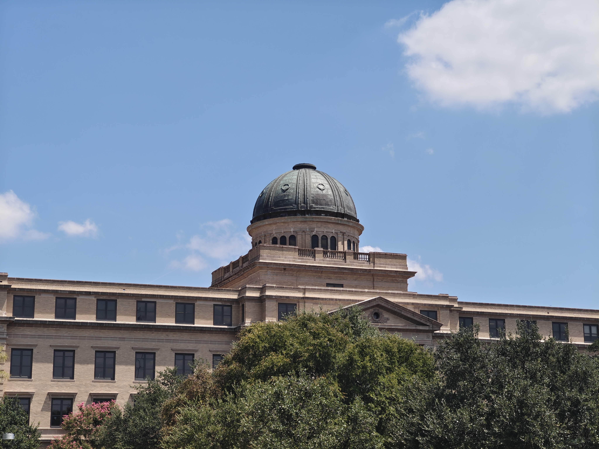
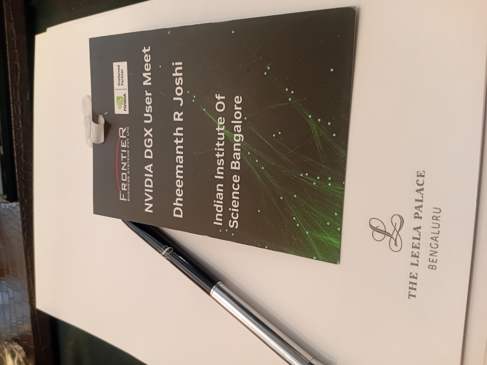
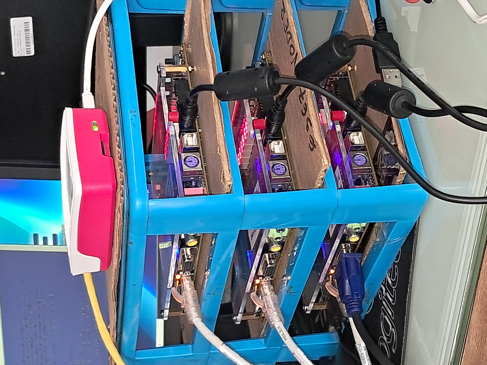
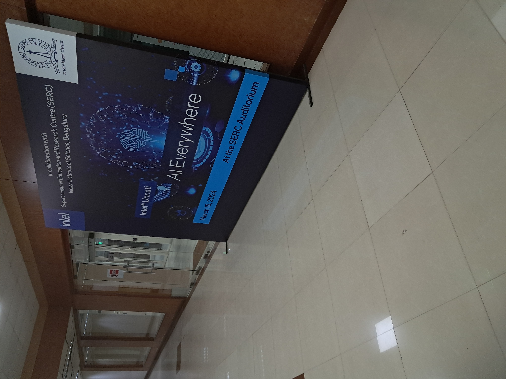
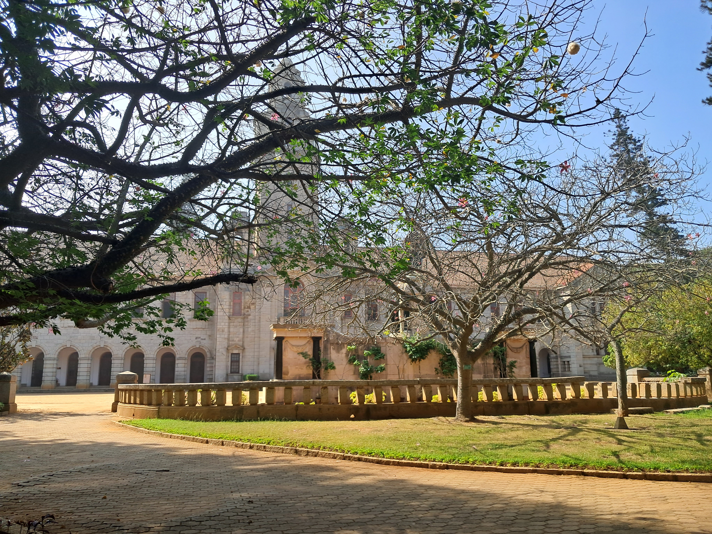
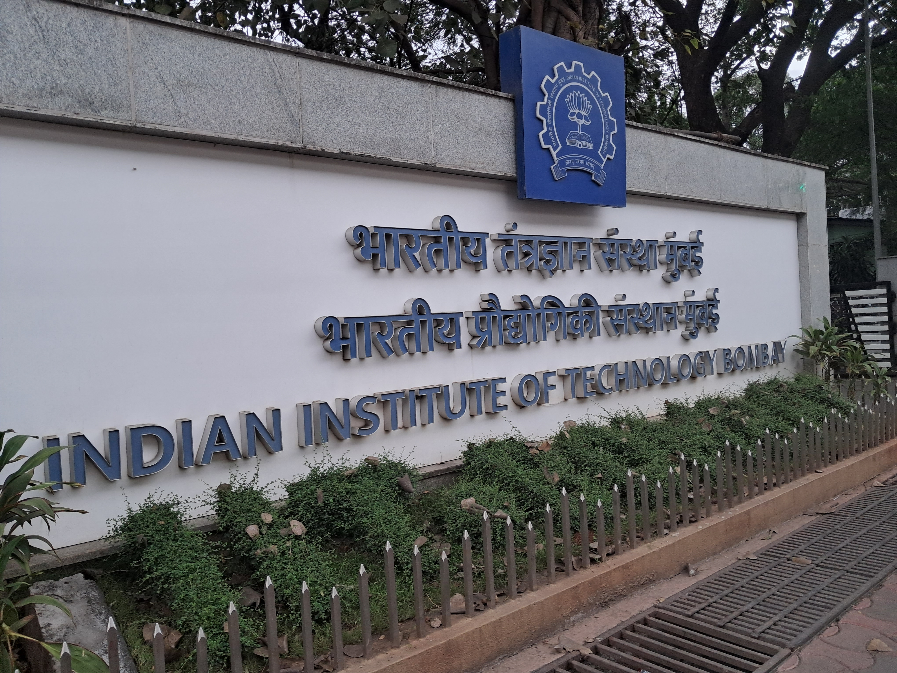
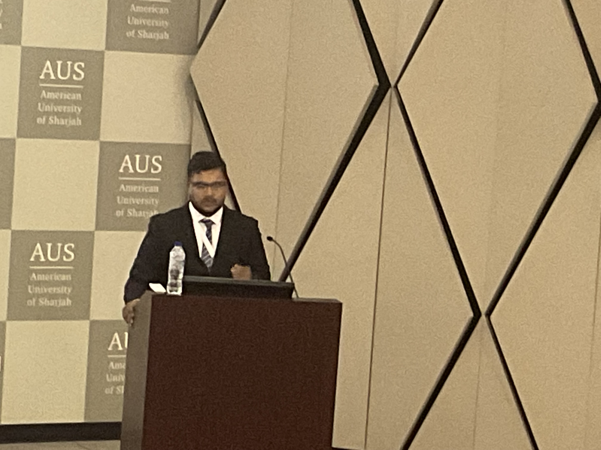
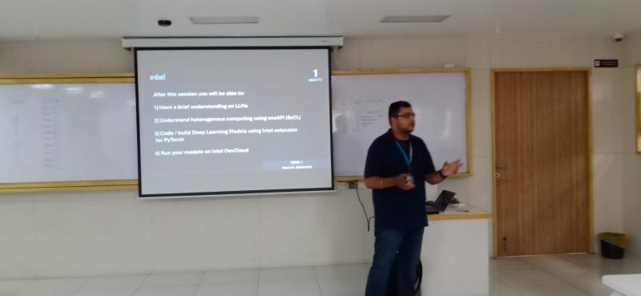
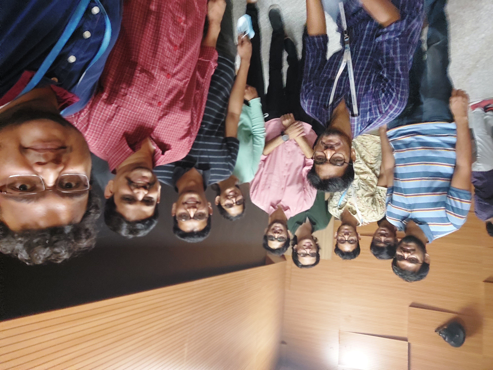

Professional Activities
Appointed Graduate Research Assistant at the Texas A&M Engineering Experiment Station (TEES), working on agentic AI serving systems: trace-granular inference scheduling, KV cache offload and recompute policies, multi-model GPU time-sharing, and online routing across heterogeneous model pools.
SkipPar appeared in IEEE Xplore as part of the IPDPSW 2026 proceedings, covering the CPU-GPU co-execution design that overlaps GPU forward and backward passes with concurrent CPU parameter updates for up to 17% faster end-to-end LLM training.
Co-authored TRACE-Router: Task-Consistent and Adaptive Online Routing for Agentic AI, an online routing policy that binds each agent task to a backend at trace granularity using a contextual bandit with delayed accuracy and latency rewards.
SkipPar: A Hybrid CPU-GPU Framework for Accelerating LLM Training via Efficient Scheduling of Parameter Updates was accepted at the IEEE International Parallel and Distributed Processing Symposium Workshops (IPDPSW) 2026 and presented in New Orleans. First-author work from the Middleware and Runtime Systems Lab at IISc.
Joined the Office of the Vice Chancellor of Engineering at Texas A&M to build AI systems and integrate them into university technology and education platforms.
Completed pre-doctoral research at IISc and joined Texas A&M University as an MS (Thesis) student in Computer Engineering with a Graduate Merit Scholarship.

Attended the NVIDIA DGX Blackwell Launch Event at Leela Palace, Bengaluru, on behalf of the IISc lab, engaging with NVIDIA leadership on the future of AI compute infrastructure.

Led a team to design and build VAJRA, a heterogeneous compute cluster for Edge AI R&D at PES University. The project was selected for funding by IHFC, IIT Delhi.

Attended the Intel Gaudi Accelerator Workshop hosted at IISc, exploring next-generation AI accelerator architecture and programming models.

Joined the Middleware & Runtime Systems Lab at the Indian Institute of Science (IISc) as a Project Associate and Pre-doctoral Researcher.

Visited the Indian Institute of Technology Bombay to attend the Semiconductor Summit, engaging with industry leaders and researchers in chip design and fabrication.

Research on the TLCC Accelerator accepted at VLSI-SoC 2023. Attended the conference and presented the work in Dubai, UAE.

Appointed as Intel Student Ambassador at PES University (PESU), representing Intel's academic and research initiatives on campus.

Joined CIE to develop workshops and mentor students in Heterogeneous Computing and Machine Learning.
Research on hyperspectral prediction accepted at the International Conference on Semantic Computing (ICSC 2022).
Served as Student Vice Chair of the IEEE Communications Society (ComSoc) chapter, organizing events and driving student engagement in communications engineering.
